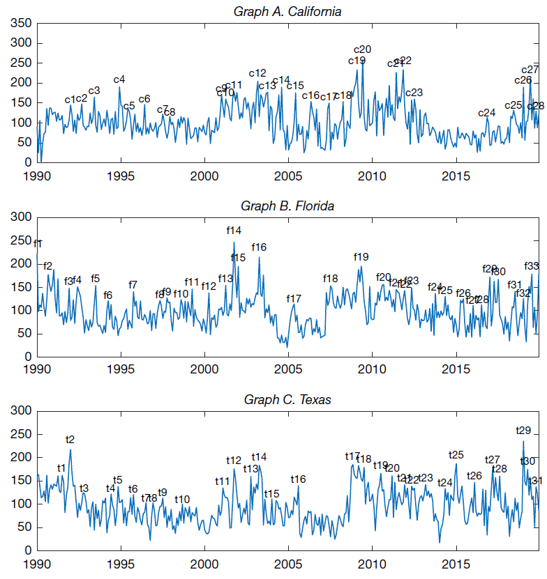

Publications
A One-Factor Model of Corporate Bond Premia
with Redouane Elkamhi and Yoshio Nozawa
Management Science, 2024, Data and code, SSRN version, Online Appendix, [+ bibtex]
Empirical asset pricing, Long-run risk, Wealthy households' Consumption
Abstract
A one-factor model based on long-run consumption growth explains the risk premiums on corporate bond portfolios sorted on credit rating, credit spreads, downside risk, idiosyncratic volatility, long-term reversals, maturity, and sensitivity to the financial intermediary capital factor. The estimated risk-aversion coefficient is lower when we use the consumption growth of wealthy households over a longer horizon as a risk factor, and a model with a 20-quarter horizon yields a risk-aversion coefficient of 15, a value similar to the one estimated from equity portfolios.Key result

Measuring "State-level" Economic Policy Uncertainty
with Redouane Elkamhi and Marco Salerno
Journal of Financial and Quantitative Analysis, 2024, Data, SSRN version, Online Appendix, [+ bibtex]
Economic uncertainty and applications to corporate finance & asset pricing
Abstract
We develop 50 indices of State-level Economic Policy Uncertainty (SEPU) based on newspaper coverage frequency using 204 million newspaper articles from March 1984 to December 2019. We assess the validity of our measures. Our SEPU indices vary counter-cyclically with respect to state-specific economic conditions, rise before close gubernatorial elections, and exhibit a large cross-sectional variation. We demonstrate that SEPU indices are associated with the cross-sectional variation in state-level GDP, employment, income as well as industry investment decisions. Our findings highlight the importance of economic policy uncertainty at the state level in addition to the nationwide level.Key result

Agency Conflicts and Investment: Evidence from a Structural Estimation
with Redouane Elkamhi, Daniel Kim, and Marco Salerno
Review of Corporate Finance Studies, 2024, SSRN version, [+ bibtex]
Dynamic capital structure model
Abstract
We develop a dynamic capital structure model to study how agency conflicts between managers and shareholders affect the joint determination of financing and investment decisions. We show that there are two agency conflicts with opposing effects on a manager’s choice of investment: first, the consumption of private benefits channel leads managers not only to choose a lower optimal leverage, but also to underinvest, and second, compensation linked to firm size may lead managers to overinvest. We fit the model to the data and show that the average firm slightly overinvests, younger CEOs invest more than older ones, while CEOs with longer tenure overinvest more than CEOs with shorter tenure.
Asset holders’ Consumption Risk and Tests of Conditional CCAPM
with Redouane Elkamhi
Journal of Financial Economics, 2023, Data and code, SSRN version, Online Appendix, [+ bibtex]
Empirical asset pricing, Asset holders' Consumption, Conditional tests
Abstract
We test the conditional consumption-CAPM using asset holders' consumption and find that the time variation in the prices of asset holders' consumption risk is procyclical. This puzzling time variation is at odds with the implication of existing consumption-based equilibrium asset pricing models. We show that our finding is a salient feature of the data observed in multiple asset classes (aggregate equity market, equity portfolios, bond portfolios, and commodities portfolios), using different measures of consumption (household survey data and high-frequency retail shopping data) and alternative empirical methodologies.Key result

Working Papers
with Diego Garcia, Michael Shin, and Siyuan Wu
Presentation: Econometric Society-ASSA (2026), CAFM (2025), FMA (2025), World Congress of the Econometric Society (2025), CU Boulder (2024), KAIST (2024), CUHK (2024), U of Sydney (2024), UTS (2024), Monash Winter Finance (2024), Sydney Macroeconomics Reading Group Workshop (2024), Korea-Japan Finance Workshop (2024)
Inflation, Experience, Attention, and Corporate Decisions
Abstract
We study how firm-level inflation attention influences corporate decisions. We construct a measure of inflation attention, using earnings calls from 2003 to 2024. Our identification strategy exploits exogenous variation in attention from CEOs’ childhood exposure to inflation. We find that CEOs who experience higher inflation in their formative years exhibit greater inflation attention following inflation shocks. Firms led by these CEOs increase leverage, especially fixed-rate debts, reduce cash holdings, and expand employment, consistent with inflation attention reflecting expectations of demand-driven inflation. Our analysis highlights how early-life experiences shape inflation attention and corporate decisions in response to macroeconomic environments.Key result

Do Minority Neighborhoods Pay More for Affordable Housing Finance?
with Changhyun Ahn
Presentation: AREUEA-ASSA (2026), CICF (2025), FMA Europe (2025), Fostering Inclusion: A Workshop to Advance Research on Diversity, Equity, and Inclusion at the University of Washington Foster School of Business (2024)
Affordable housing, Multi-family housing, Municipal bonds, Racial disparities, and Racial segregation, [+ bibtex]
Abstract
State and local governments issue tax-exempt bonds to finance developments of affordable multi-family rental housing. These bonds represent a crucial funding source for addressing the U.S. affordable housing crisis. We find that affordable housing projects in predominantly minority neighborhoods face significantly higher borrowing costs than those in predominantly white neighborhoods. This disparity persists even among FHA-insured bonds where credit risk is essentially eliminated through federal guarantees. The effect is stronger when project neighborhoods have a higher minority concentration compared to surrounding areas, suggesting that financing costs may incentivize development in racially homogeneous communities, potentially reinforcing existing patterns of racial segregation.Key result
Left-Tail Income Risk and Stock Market Participation: Evidence from U.S. Wrongful Discharge Laws
with Changhyun Ahn and Singsen Lam
Presentation: The 18th NYCU International Finance Conference (2024), Indian School of Business (2024), NTU (2024), FMA Asia/Pacific (2024), Labor and Finance Conference (2023), UNSW (2023), UYSD (2023), UTS (2023), SIPP Virtual Conference (2023), EFA (2020), NFA (2020), MFA (2020), SFA (2020), SWFA (2020), University of Toronto (2020), CUHK (2020)
FMA Asia/Pacific Best Paper Award (Asset pricing/Investment) (2024), Shinhan Bank & KAFA Best Paper Award (2023)
Household finance, Stock market participation, and Labor finance, Online Appendix, [+ bibtex]
Abstract
We exploit the adoption of employment protection laws as a quasi-natural experiment to examine how unconditional left-tail income risk influences stock market participation. Following adoption, participation rises significantly by 7.9% with a dollar holding increase of $1,627. This effect is observed extensively across broad income groups. Conversely, when the laws are reversed, participation declines. Our results are robust to multiple datasets, a stacked difference-in-differences design, and a border discontinuity design. Our calibrated portfolio choice model shows that left-tail income risk alone significantly reduces participation, whereas overall income risk has a material effect only in the absence of left-tail risk.Key result

Climate Change and Households' Risk-Taking
with Zhenyu Gao and Singsen Lam
Presentation: FMA Europe (2025), Finance Down Under (2025), SBFC (2024), CICF (2024), CFRC (2024), SGFIN Annual Research Conference on Sustainability (2024), KAFA-KFMA-KAFE (2023), SIPP Virtual Conference (2023), AFBC (2022), KAFA (2022), CUHK (2022), NTHU Symposium on Sustainable Finance and Economics (2022)
Household finance, Stock market participation, and Climate finance, [+ bibtex]
Abstract
This paper studies a novel channel through which climate risks affect households’ choices of risky asset allocation: a stringent climate change regulation elevates labor income risk for households employed by high-emission industries which in turn discourages households' financial risk-taking. Using staggered adoptions of climate change action plans across states, we find that climate change action plans lead to a reduction in the share of risky assets by 15% for households in high-emission industries. We also find a reduction in risky asset holdings after the stringent EPA regulation. These results are stronger with experiences of climate change-related disasters. Our study implies an unintended consequence of climate regulations for wealth inequality by discouraging low-wealth households' financial risk-taking.
Spouses in The Same Boat: Intra-Household Risk-Sharing and Financial Risk-Taking
with Zhenyu Gao and Singsen Lam
Presentation: UNSW Corporate Finance Workshop (2025), AsianFA (2024), Singapore Rising Scholars Conference (2024), Central University of Finance and Economics (2024), AFA PhD Poster Session (2024), FMA Doctoral Consortium (2023), CUHK (2023)
Household finance, Stock market participation, and Intra-household risk-sharing
Abstract
This paper proposes a novel channel for households' risky asset allocation: better intra-household risk-sharing reduces overall labor income risk for dual-earner couples, thus encouraging households' financial risk-taking. Capturing intra-household risk-sharing dynamics using the conditional income correlation between spouses' industries, we find that better income risk-sharing within couples increases households' financial risk-taking. Exploiting unexpected events of spousal death, we causally identify the impact of intra-household risk-sharing on households' asset choices. Our study implies an unintended consequence of positive assortative mating, a growing tendency of couples choosing partners with similar socioeconomic statuses, which limits risk-sharing between spouses, thereby discouraging financial risk-taking.
Data Scientists on Wall Street
with Ling Cen, Bing Han, and Yanru Han
Presentation: Three Asian Countries Finance Conference (2025), The 3rd Annual Conference on Capital Market Research in the Era of AI (2025), Hong Kong Conference on FinTech, AI & Big Data in Business (2025), PBCSF Tsinghua University (2025), Asian FA (2025), SKKU (2024), Yonsei University (2024)
Institutions, Data Scientists, and Stock Price Informativeness, [+ bibtex]
Abstract
Financial institutions have significantly increased their recruitment of data scientists in the last two decades. We find that the number of data scientists employed by financial institutions causally affects their ability to earn abnormal profits. Data scientists' ability to generate abnormal profits on a stock is positively correlated to the concentration of data scientists across all institutional investors holding the stock. Institutional investors strategically adjust portfolio allocation and recruitment decisions to maximize the benefits generated by their data scientists. Consistent with the notion that the competition among data scientists speeds up the production and trade of private information, we also show that the concentration of data scientists covering a stock reduces its price informativeness in the capital market.
Is Greenium a Reflection of Core Inflation Risk?
with Zhenyu Gao and Yuyi He
Presentation: Workshop on Climate Risk, Sustainability, and Real Estate (2026, scheduled), SBFC (2024), LU-JNU Joint Conference for Sustainable Finance and Development in the Digital Era (2024), CUHK (2024), KFA Autumn Conference (2024)
Best Paper Award, Korean Finance Association Autumn Conference (2024)
Greenium, Inflation, and Asset Pricing
Abstract
We present a novel stylized fact that green stocks carry higher inflation risk compared to brown stocks, performing poorly at times of unexpected inflation. Given this fact, can the outperformance of green stocks over brown stocks (the "greenium") be explained as compensation for inflation risk? We find that the magnitude of the greenium decreases by 31% and 54% for Scope 1 and Scope 2, and the greenium becomes statistically insignificant after controlling for individual stocks' core inflation risk exposure. These findings are robust to excluding brown industries and are not driven by the post-COVID inflationary period. Overall, our results suggest that the greenium is in part a reflection of inflation risk compensation.
Social Transmission of Consumption
with Zhenyu Gao, Bing Han, and Zhecheng Luo
Presentation: WFA (2026, scheduled)
Social finance, Consumption
Abstract
We find that consumption spreads through social networks via a "visibility bias" channel, consistent with the model of Han et al. (2023). Using county-level Facebook data and exogenous fracking-induced income shocks, we find that a 1% increase in a closely con- nected county’s consumption raises local spending by 0.35% in the following year. The effect is stronger for more socially connected households and for socially visible goods. Lacking a corresponding income boost, households respond by buying cheaper goods. This peer-induced spending strains household finances and increases local delinquency rates, underscoring how biased social observation can undermine financial stability.
Do Institutional Investors Use Local Grocery Inflation For Portfolio Choices?
with Byoung Uk Kang and Zhecheng Luo
Presentation: FMA Asia/Pacific (2025), Summer Finance Roundtable (2025), University of Sydney (2025), National Taiwan University (2025), Korea University (2025), CUHK (2023)
Local grocery inflation, Institutional investors, Portfolio choices, Inflation expectations
Subjective Risk-Return Trade-off
Presentation: MFA (2024), SNU (2023), Korea University (2023), KAIST (2023), Colorado Finance Summit (2022), NUS Risk Management conference (2022), CUHK (2022), Hong Kong Joint Finance Research Workshop (2022)
Media coverage: MarketWatch
Household finance, Subjective expectation, Asset pricing, [+ bibtex]
Abstract
We survey 2,548 representative U.S. respondents to estimate subjective risk-return trade-offs across savings, government bonds, stocks, real estate, gold, and cryptocurrencies. We document robust negative relationships between perceptions of risk and return among risky assets, which are observed even among financially literate respondents. Strong asset-specific sentiments, reflected in large deviations of return perceptions from average perceptions, drive these significant negative risk-return trade-offs. Both strong optimism and pessimism contribute to negative risk-return trade-offs with similar magnitudes. These negative risk-return trade-offs translate into under-diversified portfolios, as investors avoid assets they perceive to generate low returns and high risk.Key result

The Composition of Market Participants and Asset dynamics
Presentation: SFS Cavalcade (2021), RCFS/RAPS Winter Conference (2020), EFA (2019), CICF (2019), APAD (2019), EFMA (2019), ABFER, CEPR and CUHK (2019), SFS Cavalcade Asia (2018), NFA (2018), FMA (2018), YES (2018), TADC (2018), AFM (2017), AFBC (2017), Indiana University (2017)
Theoretical asset pricing and stock market participation, [+ bibtex]
Abstract
We develop a dynamic equilibrium model where heterogeneous investors endogenously choose to enter/exit the stock market. We characterize the equilibrium and present a conditional consumption CAPM. The model implies small changes in the composition of stockholders, which generate a strongly countercyclical stockholders’ amount of consumption risk. The model provides a new perspective on the main drivers of asset dynamics. It is the procyclical consumption risk-sharing implied by changes in stockholders' composition that contribute to the dynamics of risk premium, excess volatility, and price-dividend ratio. We provide empirical evidence on market participation, amount of risk, and price of risk, supporting our theory.
Other Publications
Chinese Economic Policy Uncertainty and U.S. Households' Portfolio Decisions
with Kiryoung Lee and Yoontae Jeon
Pacific-Basin Finance Journal, 2020, [+ bibtex]
Economic Uncertainty, Household Finance, Stock Market Participation, and Chinese Economy